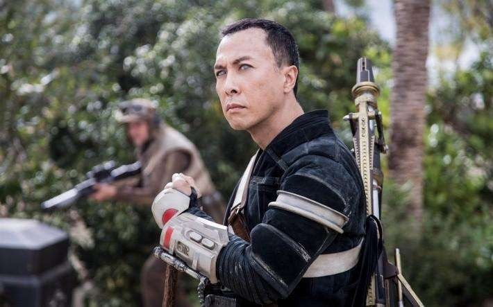

| 上映时间 | 主要演员 | 剧情简介 | 精彩镜头 | ||
|---|---|---|---|---|---|
《星球大战外传：侠盗一号》 |
2016年 | 角色：琴·厄瑟 角色：奇鲁·英威 角色： |
一个共和体制覆灭，绝地武士崩溃的时代，自帕尔帕廷以所谓的新秩序将银河共和国改组为银河帝国之后，在银河帝国的高压统治下，人民的起义增多并形成各类起义组织，这其中就有蒙·莫思马（金妮韦芙·奥蕾利饰）领导下的义军同盟。各种反抗活动使得银河帝国不得不拿出各种应对措施来镇压起义活动，而这其中最暴力最铁血的方式就是战斗空间站死星。琴·厄瑟（菲丽希缇·琼斯饰）是个非常泼辣的女孩，落到义军同盟手中后，蒙·莫思马看中了琴·厄索，并将其选做偷取死星设计图的人选，于是她集结了一支小组，共同执行这次特别任务。 |
 |
|
《游侠索洛：星球大战外传》 |
2018年 | 角色：汉·索罗 角色：琦拉 Qi'Ra 角色：兰多·卡瑞辛 |
汉·索罗属于银河系中最受喜爱的恶棍，准备带着女友琦拉出逃，他们在登机前被迫分开。为了有朝一日能开着自己的飞船回来英雄救美，汉·索罗加入帝国军校成为飞行员，转眼几年过去，汉·索罗不守规矩被军校开除。为了回家乡营救女友，汉·索罗搭上走私船。经过在黑暗危险的罪犯地下社会中的重重冒险，汉·索罗结识了丘巴卡、以及臭名昭著的赌徒兰多·卡瑞辛共同展开了一场星战传奇中最不正统的英雄历程。 | ||
| 返回上一页 | 返回首页 |